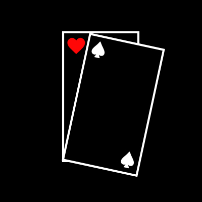
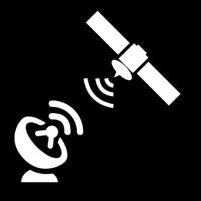

Summary
Passionate physicist with a strong interest and background within programming. Excellent problem-solving, teamwork abilities, and drive for outstanding performance. Committed to excellence and seeking a challenging role to leverage and develop theoretical skills and frameworks to solve real-world problems.
Technical Skills
- Programming Skills: Python, C, FORTRAN, MATLAB, Java
- HPC Frameworks: OpenMP, MPI
- Physics Skills: Mathematical and logic-based problem solving, decomposing complex problems into more easily manageable constituents, critical thinking skills to aid in feasibility and longevity, assessing validity and reliability through research and reasoning
Education
-
Curtin University
Perth, Australia
Bachelor of Advanced Science (Honours) - PhysicsFeb 2020 - Dec 2024 (Projected)
-
Frederick Irwin Anglican School
Mandurah, Australia
Highschool DiplomaJan 2013 - Dec 2019
Projects


Experience
-
Bar Supervisor
Nov 2021 - Current
Rambla On SwanPerth, Australia
- Rapidly excelled within the role by striving and achieving a high standard of knowledge and efficiency
- Developed effective communication skills between co-workers, management and customers
- Took on responsibilities of managing resources
-
Internship - Planetary Science
June 2021 - July 2021
Curtin UniversityPerth, Australia
- Developed research and critical thinking skills
- Gained insight into data workflows and visualisations
- Collaborated with peers and presented results
Achievements
- Certificate of Excellence for Curtin Course Calc 2
- Curtin Excellence Scholarship
- DUX Of Frederick Irwin Anglican School
- Top Student of Year 12 Mathematics Specialist
- Top Student of Year 12 Mathematics Methods
- Top Student of Year 12 Physics
References
References upon request